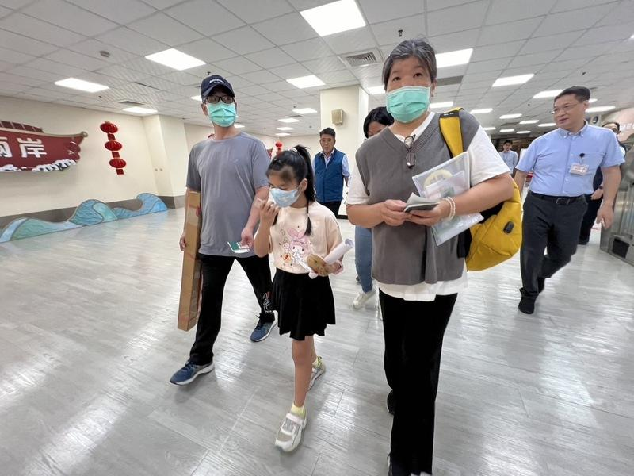
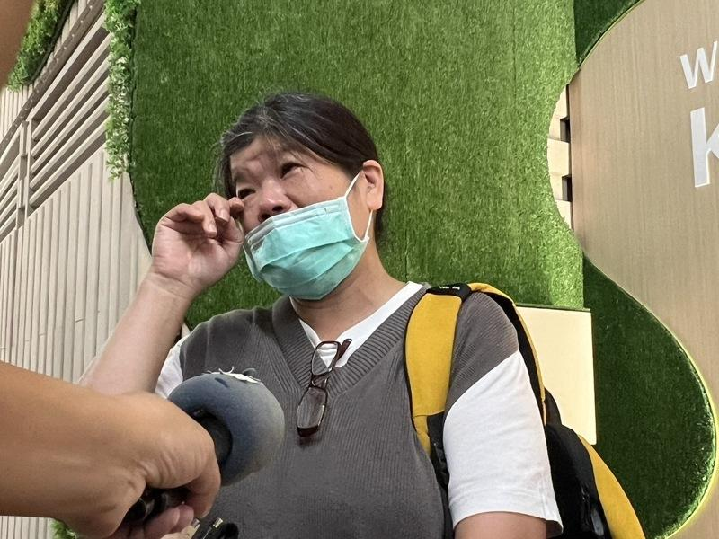
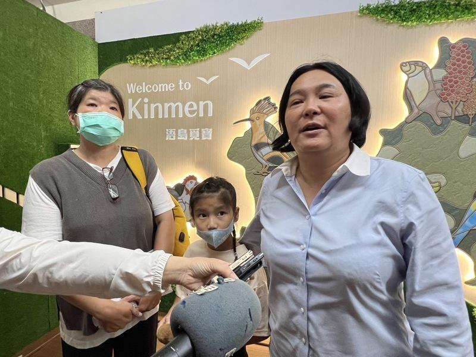

金门胡姓钓客滞留中国大陆4个多月，立委陈玉珍今天(7)上午陪家属搭第一班小三通船班前往厦门接人。胡男母亲频拭泪说，心中大石头终于放下，胡男读小学的女儿也一起前往厦门接父亲，小女孩带着与父亲约定的100分考卷、父亲节卡片要迎接父亲回乡。父亲节前夕，终于能一家团聚，对胡家人来说，这是最棒的父亲节礼物。
家属说，这一刻等了4个多月，终于盼到了，内心非常感动，要感谢过程中太多人温暖协助。
0214陆船事件日前落幕，今年3月14日因海钓而漂流至大陆的金门胡姓钓客也露出曙光，胡男之前仍有台湾军人身分，情况较敏感，让大陆迟迟未放人，胡男已办理退役，0214陆船事件也解决，终于让胡男可以平安回家。
陈玉珍一路协助家属，一行人今早搭乘上午9时第一班船前往厦门，出发前8时30分在金门水头旅客服务中心开记者会说明。
胡姓钓客归心似箭，原本返程可能是搭最后一班、下午5时30分船班返回金门。现在确定可能提早，预计最快上午11时30分就能回到金门。
胡男当时到大陆没有经正常程序通关，身边也没证件，胡男父母今带着儿子的证件前往厦门，胡男妻子则在家里处理相关事务，待众人返家。
外界关注澎湖籍「大进满188」人船何时能获释，陈玉珍说，这件事仍持续在交涉中，应该很快能有消息。
陈玉珍今早在脸书以「返乡，所有人心里最深的盼望」为题，写到对于一年往返台金数百次的她而言，今天返回金门的这一趟飞行，特别有意义。
陈玉珍说，昨晚有居住在桃园的乡亲，邀她一早去桃园机场欢迎金门之光李洋归国搭机抵达桃园机场，她告诉对方「我今天一早必须回金门，要到厦门接回滞留的大陆的金门乡亲回家」。
陈玉珍有感而发地说，过去4、5个月，密集往返大陆、台金之间，不止为乡亲，也是为两岸和平往来。其中经历许多跌宕起伏、心中感慨万千，许多过程不足为外人道，「因为需要感谢的人太多了，就感谢天。」也感谢这一切美好安排。

